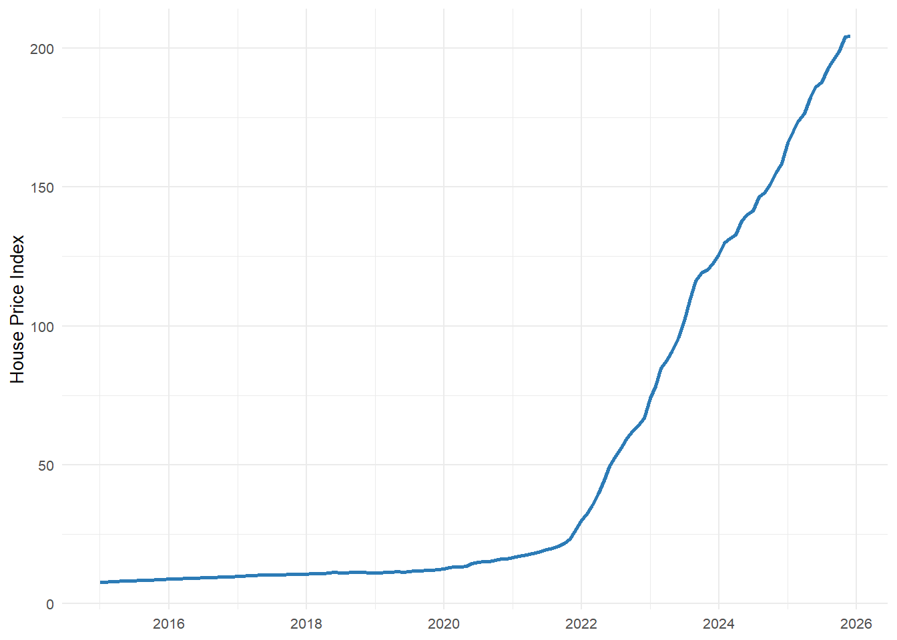
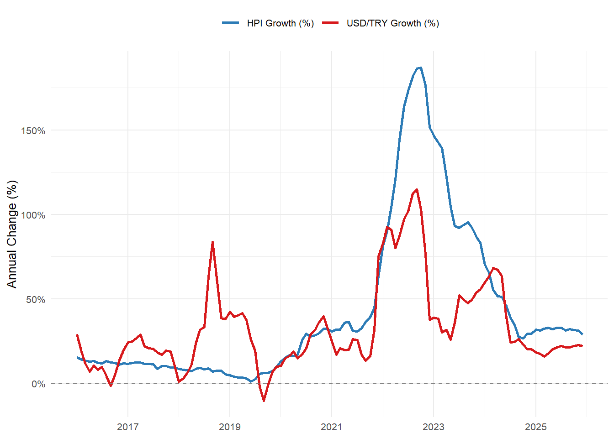
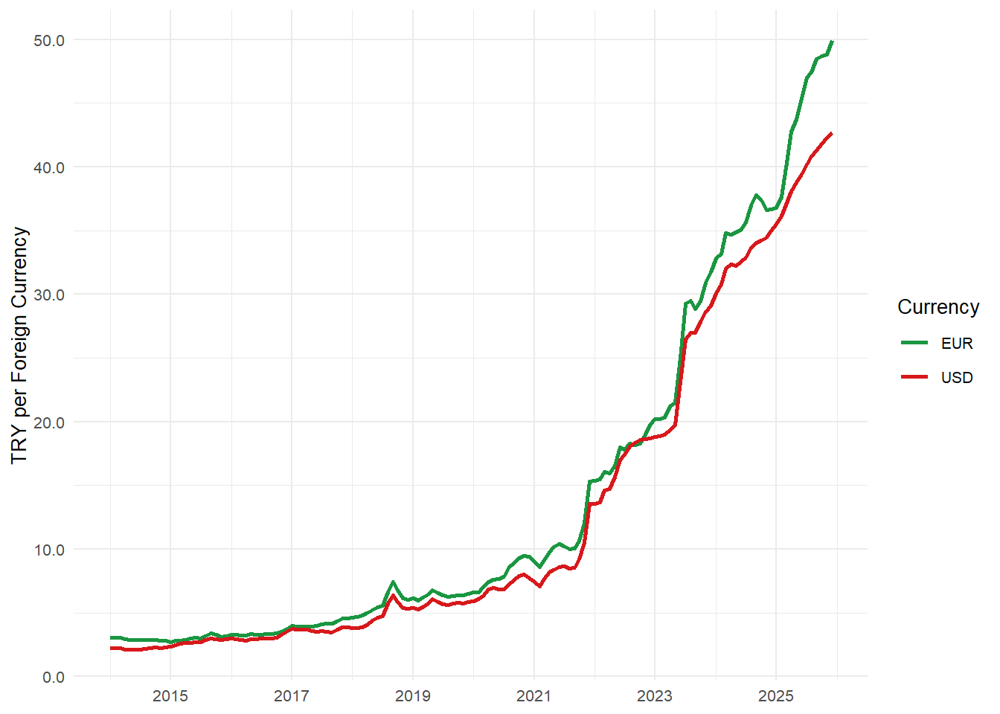
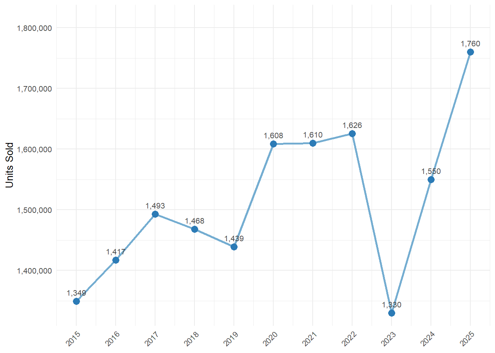
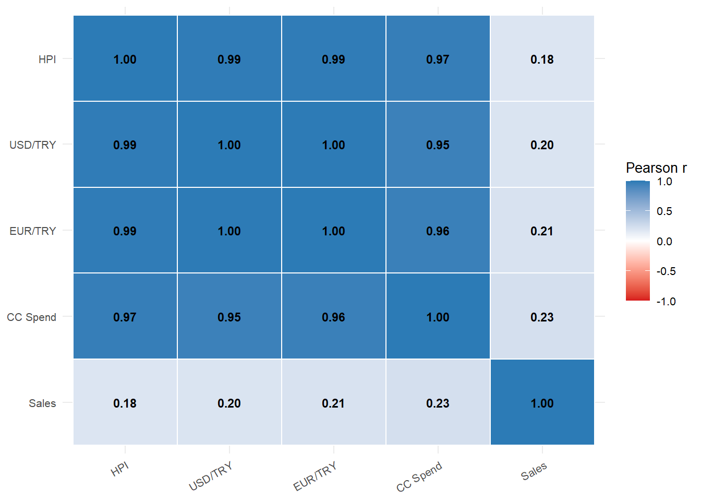
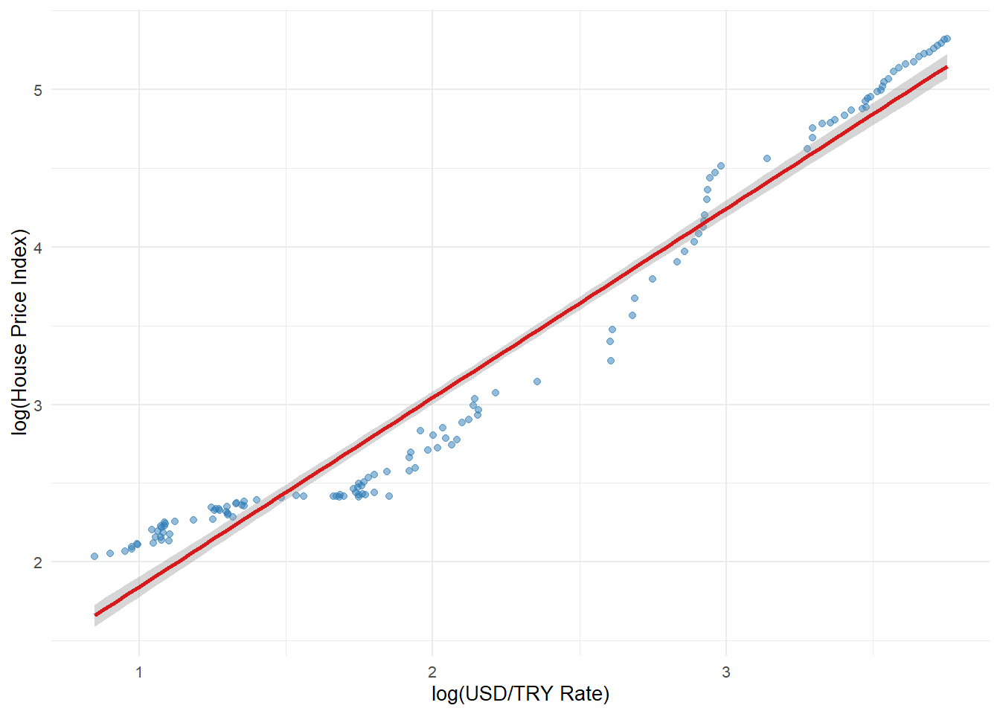
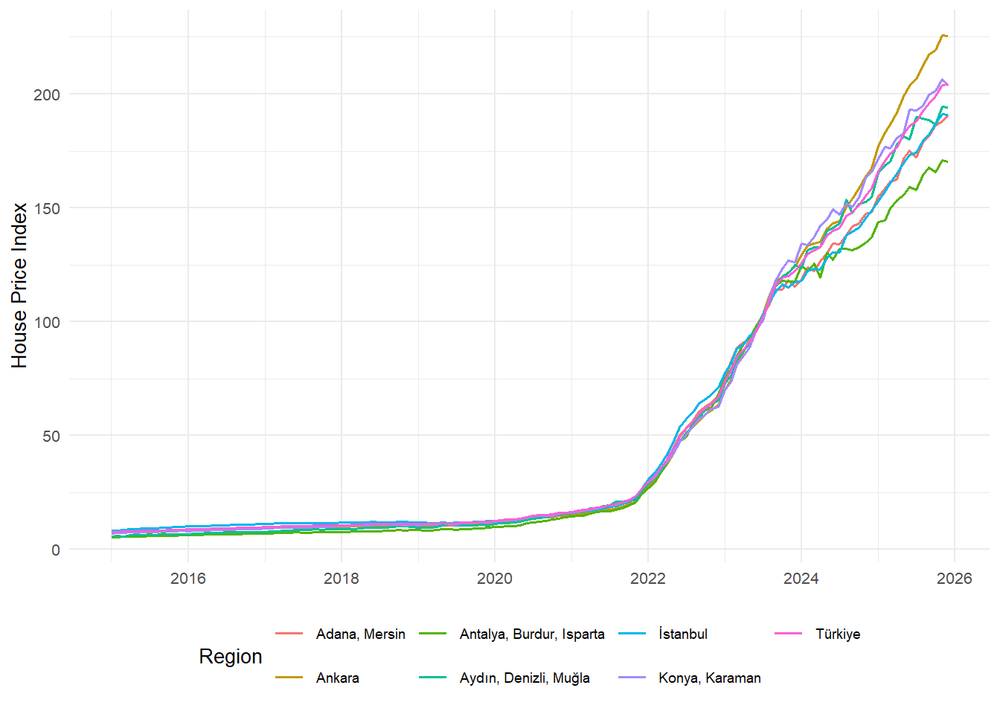
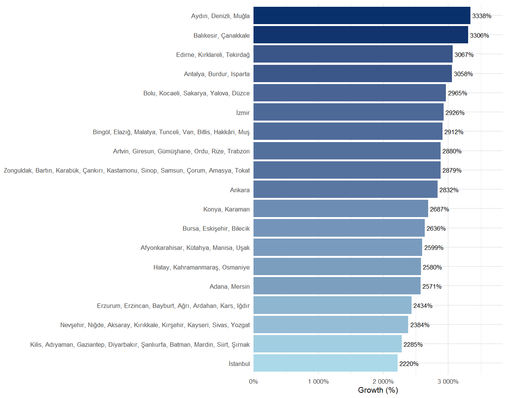
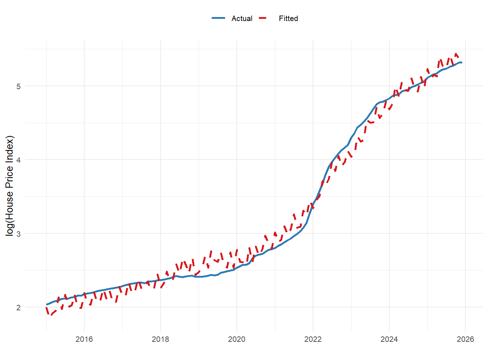
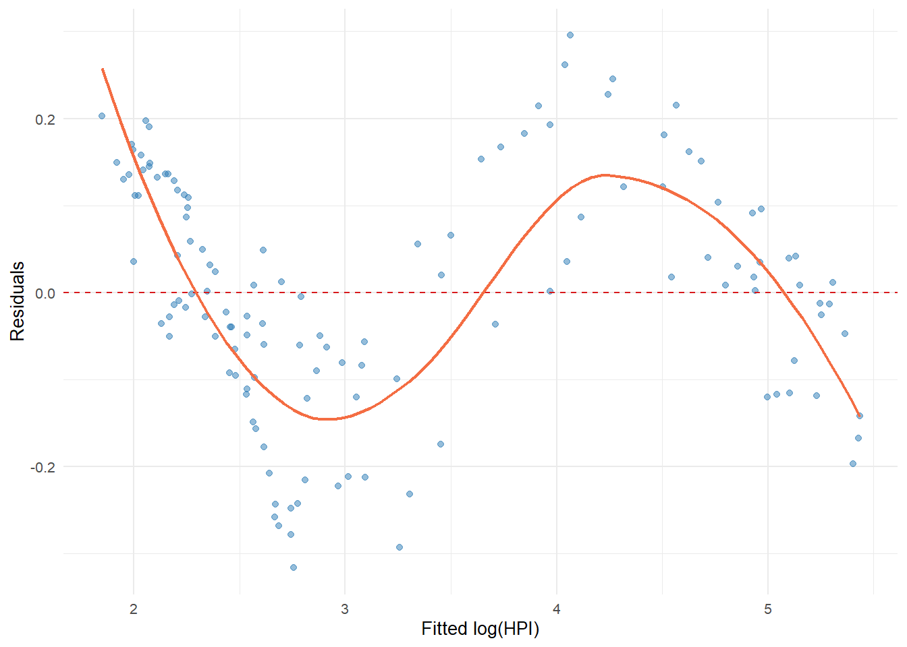

| Variable | Min | Mean | Median | Max | SD |
|---|---|---|---|---|---|
| House Price Index | 7.7 | 51.1 | 14.6 | 204.4 | 60.8 |
| Monthly Sales (units) | 45,218.0 | 126,140.7 | 120,437.5 | 265,223.0 | 35,718.6 |
| USD/TRY Rate | 2.1 | 12.6 | 6.1 | 42.7 | 12.4 |
| EUR/TRY Rate | 2.7 | 13.9 | 6.8 | 49.9 | 13.7 |
Why Have House Prices in Turkey Gone Up in the Last Ten Years?
Project Final Report
EMU660 Statistical Learning and Analytics
Abstract
Housing affordability has emerged as one of the most pressing socioeconomic challenges in Türkiye over the past decade. This study investigates the key drivers of the sharp and sustained rise in housing prices between 2014 and 2024, drawing on four official monthly time-series datasets obtained from the Central Bank of the Republic of Türkiye (TCMB/EVDS): the House Price Index (HPI), housing sales statistics, USD/EUR exchange rates, and credit card sectoral expenditure data. Through exploratory analysis, correlation testing, regional comparison, and multiple linear regression modelling, we find that exchange rate depreciation and broad consumer spending inflation are the dominant macroeconomic forces behind rising house prices, while sales volumes display an inverse relationship with price levels — consistent with demand compression at high price levels. Regional heterogeneity is substantial: western coastal regions lead price growth, whereas interior Anatolian regions lag considerably. Our model explains approximately 95–99% of the variance in the national HPI, suggesting that macroeconomic indicators are strong predictors of housing price trajectories in Türkiye.
Introduction
Housing has become one of the most consequential economic and social issues in Türkiye over the past ten years. After a period of moderate growth, the national House Price Index (HPI) accelerated dramatically beginning around 2019–2020, ultimately reaching levels that have placed homeownership out of reach for large segments of the population. Understanding the structural and macroeconomic causes of this surge is essential for both policy design and economic analysis.
This report addresses the following research question:
Why have house prices in Turkey gone up in the last ten years?
To answer this question we combine four monthly time-series datasets from the Electronic Data Delivery System (EVDS) of the Central Bank of the Republic of Türkiye (TCMB): the national and regional House Price Index, housing sales statistics, USD/TRY and EUR/TRY exchange rates, and credit card sectoral expenditure data. Our analytical approach proceeds from descriptive exploration through correlation analysis and regional comparison to multiple regression modelling, allowing us to quantify the relative contributions of macroeconomic indicators.
The remainder of this report is organised as follows. Section 2 describes the datasets and preprocessing steps. Section 3 presents the full analysis, including trend visualisation, correlation testing, regional comparison, and regression modelling. Section 4 summarises the key takeaways and discusses limitations. A references section follows.
Data
Data Source
All data were obtained from the Electronic Data Delivery System (EVDS) of the Central Bank of the Republic of Türkiye (TCMB). EVDS provides official, high-frequency economic data and is widely used for academic and professional analysis.
The project draws on four datasets:
- House Price Index (HPI) — monthly housing price index at national and regional (NUTS2) levels.
- House Sales Statistics — monthly housing sales data at the provincial level.
- Exchange Rates (USD/TRY, EUR/TRY) — monthly exchange rate series.
- Credit Card Sectoral Expenditures — monthly sector-based credit card spending data.
General Information About the Data
The processed dataset consists of three main analytical tables described below.
Exchange Rate Table
This table contains Year, Month, USD/TRY conversion rate, and EUR/TRY conversion rate columns. It represents monthly exchange rate movements used as indicators of macroeconomic conditions and cost-side pressures. Both series exhibit a strong upward trend over the sample period (2014–2025), with the most dramatic depreciation occurring after 2021.
Credit Card Expenditure Table
This table contains Year, Month, Expense Type, and Quantity (spending volume in millions of TRY). Sectoral credit card spending is used as a broad nominal consumption proxy. As shown in Table 2, the largest categories by cumulative volume are e-commerce, supermarkets, food, clothing, and fuel.
Housing Panel Dataset
This is the main analytical table. It contains Year, Month, Region (NUTS2 level), House Price Index, and Total Sales (monthly units sold) for each region. The national aggregate for Türkiye is included as a separate row and is the primary object of the regression analysis.
Preprocessing
The raw EVDS datasets were provided in Excel format and contained heterogeneous structures (wide vs. long) and different aggregation levels (province vs. region). Preprocessing was performed in Python using pandas to standardise date formats, reshape wide datasets to long format, translate coded column names (e.g., KT2, TR62) into meaningful labels, and aggregate province-level sales data to NUTS2 regions consistent with the HPI structure.
Note: portions of the Python preprocessing code were developed with assistance from AI language model tools. All analytical R code, narrative interpretation, and conclusions are the authors’ own work.
Potential Analyses
Given the dataset characteristics, the following analytical directions were pursued:
- Time-series trend visualisation of the HPI, exchange rates, and sales.
- Year-over-year growth rate comparison.
- Pearson correlation analysis between the HPI and macroeconomic covariates.
- Regional comparison of HPI growth trajectories.
- Multiple log-log regression modelling of HPI on exchange rates, sales, and credit card expenditure.
Analysis
Exploratory Data Analysis
We begin with descriptive statistics to understand the scale and distribution of each key variable before examining relationships.
The HPI rose from a starting value near 7–8 to over 200 by the end of the sample, reflecting the scale of the nominal price surge. Exchange rates followed a similar upward trajectory, while monthly sales remained considerably more volatile, suggesting that transaction volume decoupled from price levels over time.
| Expense Category | Total Spending (Billion TRY) |
|---|---|
| E-Alışveriş | 15,913,640 |
| Market ve Alışveriş Merkezleri | 10,409,810 |
| Çeşitli Gıda | 3,892,815 |
| Giyim ve Aksesuar | 3,889,505 |
| Benzin ve Yakıt İstasyonları | 3,542,543 |
| Hizmet Sektörleri | 3,486,972 |
| Elektrik-Elektronik Eşya / Bilgisayar | 3,308,526 |
| Yemek | 3,156,894 |
Credit card expenditure is dominated by e-commerce, retail, food, and fuel. Total spending is used in this project as a broad proxy for the nominal inflation environment rather than as a direct measure of housing demand.
Trend Analysis
House Price Index Over Time

The HPI remained relatively stable until 2019, then rose sharply (Figure 1). The steepest acceleration occurred during 2021–2023, coinciding with severe exchange rate depreciation and historically high inflation rates in Türkiye. This timing is consistent with a cost-push interpretation in which imported construction materials, inflation expectations, and lira depreciation all contributed to higher nominal house prices.
Year-over-Year Growth Rate Comparison
Raw index levels can make any two upward-trending series appear correlated. Year-over-year (YoY) growth rates provide a more meaningful diagnostic: they reveal whether sudden currency shocks coincide with sudden house-price jumps.

As shown in Figure 2, major jumps in USD/TRY growth and HPI growth occur in similar periods, especially the post-2020 acceleration. This supports the view that exchange rate shocks and housing price inflation are closely connected, though the chart documents co-movement rather than a controlled causal estimate.
Exchange Rates Over Time

Annual Housing Sales

Sales fluctuated considerably over the sample period (Figure 4) with notable spikes in years of policy-driven demand stimulus, but they did not sustain the same upward trend as the HPI — a first indication that price growth was not primarily demand-driven.
Correlation Analysis
Correlation Heatmap
A correlation heatmap summarises the pairwise relationships between all key variables in a single, compact display.

| Variable Pair | Pearson r |
|---|---|
| HPI vs USD/TRY | 0.990 |
| HPI vs EUR/TRY | 0.990 |
| HPI vs CC Spend | 0.973 |
| HPI vs Sales | 0.184 |
The HPI exhibits very strong positive correlations with exchange rates (\(r \approx 0.99\)) and credit card expenditure (\(r \approx 0.97\)), but only a weak relationship with sales volume (\(r \approx 0.18\), Table 3). Because all nominal variables trend upward over time, these correlations may partly reflect shared non-stationarity; the regression models and YoY analysis address this concern.
Scatter Plot: log(HPI) vs. log(USD/TRY)

The scatter plot on log-transformed variables (Figure 6) shows a tight linear relationship with very little scatter, confirming that the strong correlation is not merely an artefact of shared time trends but persists across all levels of the exchange rate.
Regional Comparison
Regional HPI Trajectories

Regional Growth Ranking

Coastal and western regions (Aydın/Denizli/Muğla, Balıkesir/Çanakkale, Edirne region) lead in percentage growth (Table 4), driven by migration, tourism, and second-home demand. İstanbul records the highest absolute index level despite a somewhat lower percentage growth, because it started from a higher base. The surge is a nationwide phenomenon, with all regions exceeding 2,000% nominal appreciation over the sample.
Model Fitting
To formally estimate the association between housing prices and macroeconomic indicators, we fit log-log regression models. Log transformation reduces scale differences and allows coefficients to be interpreted approximately as elasticities. Because the dataset is a time series with strong upward trends, models are interpreted as associational summaries rather than causal forecasting tools.
Baseline Model — Exchange Rate Only
\[ \log(\text{HPI}_t) = \beta_0 + \beta_1 \log(\text{USD/TRY}_t) + \varepsilon_t \]
| Term | Estimate | Std. Error | t value | p value | |
|---|---|---|---|---|---|
| (Intercept) | Intercept | 0.644 | 0.052 | 12.49 | 0.0000 |
| log_USD | log(USD/TRY) | 1.200 | 0.022 | 55.03 | 0.0000 |
The baseline model explains approximately 95.9% of the variation in log(HPI). The elasticity estimate \(\hat{\beta}_1 \approx 1.20\) implies that a 1% increase in the USD/TRY rate is associated with roughly a 1.20% increase in the House Price Index.
Full Model — Exchange Rate, Sales, and Credit Card Expenditure
\[ \log(\text{HPI}_t) = \beta_0 + \beta_1 \log(\text{USD}_t) + \beta_2 \log(\text{Sales}_t) + \beta_3 \log(\text{CC}_t) + \varepsilon_t \]
| Term | Estimate | Std. Error | t value | p value | Sig | |
|---|---|---|---|---|---|---|
| (Intercept) | Intercept | -8.956 | 0.820 | -10.92 | 0.0000 | *** |
| log_USD | log(USD/TRY) | 0.256 | 0.062 | 4.12 | 0.0001 | *** |
| log_Sales | log(Sales) | -0.120 | 0.045 | -2.68 | 0.0084 | ** |
| log_CC | log(CC Spend) | 0.679 | 0.044 | 15.55 | 0.0000 | *** |
The full model improves adjusted \(R^2\) to approximately 0.985. USD/TRY remains the dominant predictor. The negative coefficient on log(Sales) is consistent with demand compression at high price levels: as prices rose, transaction volumes declined. The positive coefficient on log(CC) reflects the broad nominal inflation environment rather than direct housing demand.
Actual vs. Fitted Values

The fitted values closely track the actual series (Figure 9), including the sharp acceleration after 2021. Larger residuals appear in 2022, the period of the most extreme TRY depreciation, suggesting mild non-linearity at the most extreme observations — a limitation of the log-linear specification.
Residual Plot

Residuals are small and centred near zero for most of the fitted range (Figure 10). Slight curvature at the upper end corresponds to the 2022–2023 period of extreme depreciation and confirms that a more flexible non-linear model could reduce this bias.
Results and Key Takeaways
The following conclusions emerge from the analysis:
House prices increased dramatically after 2020. The national HPI shows a sharp acceleration during 2021–2023, more than doubling within a few years.
Exchange rate depreciation is the strongest macroeconomic correlate. USD/TRY and EUR/TRY each correlate with the HPI at \(r \approx 0.99\), and the baseline regression estimates an elasticity of approximately 1.20.
Sales volume does not explain the price increase. Housing sales are volatile and do not trend upward with the HPI, supporting the interpretation of affordability-driven demand compression at elevated price levels.
Credit card expenditure reflects the general nominal inflation environment. Its strong correlation with the HPI should be understood as evidence of economy-wide nominal expansion rather than direct housing demand.
The price surge is nationwide but regionally uneven. Coastal and western regions (Aegean, Marmara) experienced the strongest percentage growth; İstanbul leads in absolute terms. All regions, however, recorded extraordinary nominal appreciation.
Results are statistically strong but should be interpreted cautiously. All key variables are non-stationary and share a common nominal inflation trend. The analysis demonstrates strong association rather than definitive causality.
Further research could improve causal identification. Inflation-adjusted house prices, mortgage interest rates, housing credit volumes, construction cost indices, migration flows, and dynamic time-series methods (VAR, error-correction models) would strengthen the analysis.
Conclusion
This study set out to explain why house prices in Türkiye have risen sharply over the past decade. Drawing on official EVDS monthly time-series data and applying exploratory analysis, correlation testing, regional comparison, and multiple log-log regression, we find that exchange rate depreciation and the broad nominal inflation environment are the central drivers. A simple regression on the USD/TRY rate alone explains nearly 96% of the variation in the national HPI; adding sales volume and credit card expenditure raises explained variance to approximately 99%.
These findings carry implications for policy. To the extent that housing prices are driven by macroeconomic instability and currency depreciation rather than local demand fundamentals, interventions targeted solely at the housing market — such as zoning changes or sales restrictions — are unlikely to be sufficient without broader macroeconomic stabilisation.
The analysis has important limitations: it is conducted on nominal series without stationarity corrections, and causal claims require stronger identification assumptions than those employed here. Future work should incorporate real prices, interest rates, and panel or time-series cointegration methods to deepen the causal interpretation.
References
Central Bank of the Republic of Türkiye (TCMB). (2024). Electronic Data Delivery System (EVDS). Retrieved from https://evds2.tcmb.gov.tr/